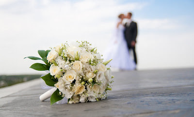

When planning your wedding, there are things that are nice to know, and there are things you
need to know.
advice so essential any bride who's lucky enough to hear it thinks, "I'm so glad someone told me that!"
If you're wondering whether there's something you may have missed (or even if you've got everything under
control),
check out our indispensable planning secrets below.
Get a grip on the approximate number of guests you'll invite before settling on a venue.
This will ensure there's ample space for your crew. As a rule of thumb, allow for 25 to 30 square feet per guest.
That may seem like a lot, but it's really not if you count the space you'll need for the tables, bustling waiters, the band and a dance floor.
Take advantage of the high cost of weddings and sign up for a credit card with a rewards program. Whether it gives you airline miles or great shopping deals, consolidating all wedding-related purchases to this card will help you accumulate thousands of rewards points (which could be used for your honeymoon).
In a three-ring binder, compile all your correspondences with vendors, notes you make during meetings, and photos or tear sheets from magazines you want vendors to see.
Set up a special email address dedicated to your wedding, and store important vendor numbers in your cell phone. For on-the-go planning that keeps everything in one place, download the The Knot All-In-One Wedding Planner app to keep all of your planning info digitally on-hand at all times.
